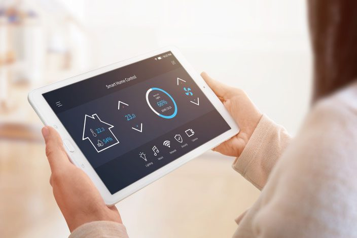
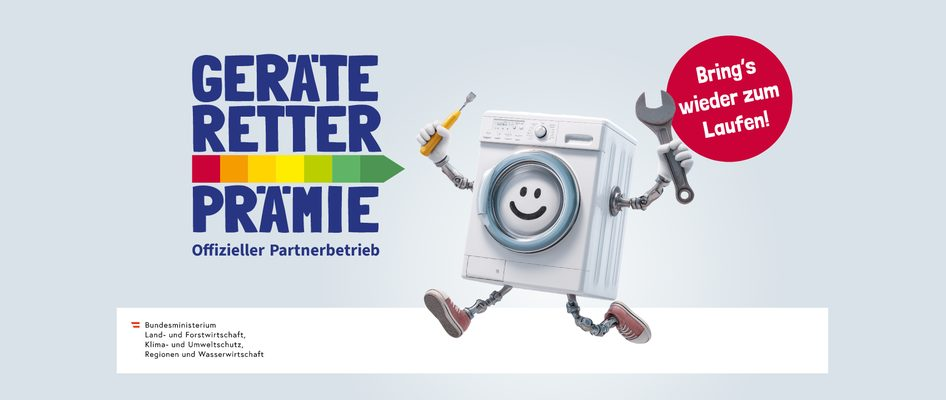
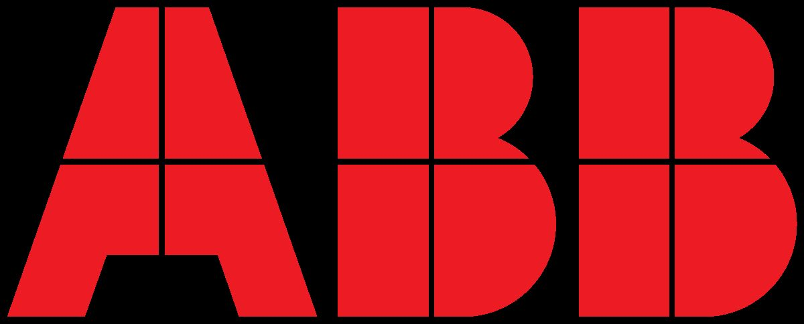
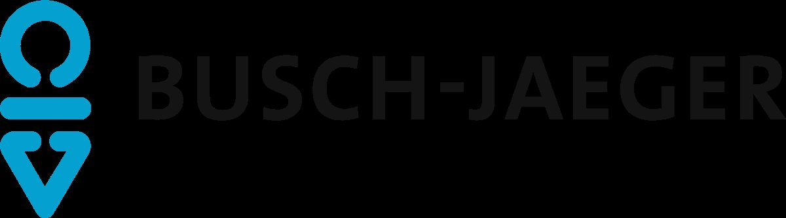

Elektrotechnik seit 1997 · Tarsdorf & Bürmoos
Wir halten Sie unter Strom.
Ihr Fachbetrieb für elektrische Lösungen: Elektroinstallation, Photovoltaik und Speicher, Gebäudeautomation mit Loxone und KNX, Alarmanlagen – und ein Verkaufsgeschäft mit Reparaturservice für Geräte aller Marken.
- Loxone Partner
- INEO-Award 2020–2023
- Mitglied Photovoltaic Austria
- 2 Standorte
- Störungsdienst

Leistungsübersicht
Zwölf Bereiche, ein Ansprechpartner
Wir sind ein breit aufgestelltes Familienunternehmen, das sich sowohl mit solidem elektrotechnischem Handwerk als auch mit zukunftsträchtigen Technologien auseinandersetzt. Ob Privathaus, Gewerbe oder Kommune – wir beraten Sie gerne.
Elektroinstallation
Kerngeschäft für Privat, Gewerbe und Kommune – zuverlässig und kompetent.
LST-02Alarmanlagen
Brandmelder, Alarmmeldeanlagen, Sprechanlagen und Zutrittskontrollen.
LST-03Photovoltaik & Speicher
Planung, Montage, Installation und Förderabwicklung – Neuanlage oder Erweiterung.
LST-04Ausstellung & Verkauf Haushaltsgeräte
Verkaufsgeschäft Bürmoos: Geräte lagernd und auf Bestellung.
LST-05Beleuchtungstechnik
Vom Eigenheim bis zur Straßenbeleuchtung, mit dynamischem Lichtmanagement.
LST-06Erdungsanlagen
Neuerrichtung, Überprüfung und Instandhaltung sämtlicher Erdungsanlagen.
LST-07Gebäudeautomation
Bussysteme, Loxone und KNX – Licht, Beschattung, Heizung, Zutritt, Alarm.
LST-08Geräte-Retter-Prämie
Aktuell: Förderprämie für Gerätereparaturen, wir sind Partnerbetrieb.
LST-09EDV & Netzwerktechnik
Netzwerkinstallationen, Netzwerkschränke, WLAN und AGFEO-Telefonanlagen.
LST-10TV & SAT-Anlagen
Einstellung von TV- und SAT-Anlagen, Ersatzfernbedienungen.
LST-11Reparaturen
Rasche Reparaturen und Störungsdienst für Geräte aller Marken.
LST-12Kleingeräte & Kleinware
Elektromaterial, Leuchtmittel, Kabel, Batterien und mehr im Fachgeschäft.
Photovoltaik & Speicher
Strom vom eigenen Dach – geplant, montiert, gefördert
Als Mitglied der Vereinigung Photovoltaic Austria bringen wir die notwendige elektrotechnische Kompetenz für Planung, Montage und Installation Ihrer Photovoltaikanlage mit – bei Neuanlagen ebenso wie bei Erweiterungen.
Photovoltaik ist eine moderne und umweltfreundliche Stromalternative, die sich langfristig bezahlt macht: Sie sind weitestgehend unabhängig in der Versorgung und nur geringfügig von steigenden Strompreisen betroffen.
Was wir übernehmen
- Einreichen der Förderung und Abwicklung
- Planung und Montage inklusive Speicher
- Absturzsicherung über unser zertifiziertes Leitergerüst
- Anlagen auf Blechfalzdach, Flachdach, bekiestem Flachdach
- Gewerbeprojekte wie Firma Loiperdinger und Felber Reisen
Verkauf & Service Bürmoos
Neues Gerät, Reparatur oder nur ein Ersatzteil
Egal ob die Waschmaschine streikt, der Kühlschrank zu klein wird oder Sie von einem modernen Kochfeld träumen – im Fachgeschäft in Bürmoos finden Sie die passende Lösung. Wir nehmen uns Zeit für eine ausführliche Beratung, damit Sie genau das Gerät finden, das zu Ihren Bedürfnissen und Ihrem Budget passt.
Beratung, Lieferung, Montage – alles aus einer Hand. Repariert wird unabhängig davon, ob das Gerät bei uns gekauft wurde.

Wer wir sind
Familienunternehmen mit Anspruch
Wir bei Elektro Schuster haben viele Ziele. Jeder seine eigenen – aber was unser Team gemeinsam hat, ist die positive Grundeinstellung: für jedes Projekt das Beste zu geben, mit Herz, Hirn und Wissen bei der Sache zu sein, um am Ende einem zufriedenen Kunden die Hand schütteln zu können. Denn ein glücklicher Kunde ist nach wie vor besser als jede sonstige Werbung.
Zuverlässigkeit, hohe Qualitätsansprüche und technisches Know-how zeichnen unser Unternehmen und unsere Mitarbeiter aus.
Verstärkung an beiden Standorten
- Elektrotechniker*innen
- Prüftechniker für Anlagenüberprüfungen
- Lehrlinge für Elektrotechnik
Lehrbetrieb mit Herz & Verstand: Aktuell bilden wir 6 motivierte Lehrlinge aus, 13 Fachkräfte haben ihre Ausbildung bei uns bereits erfolgreich abgeschlossen.
Öffnungszeiten
Wir sind für Sie da
| Tarsdorf | Mo bis Fr 07:00–12:00 Uhr und 14:00–18:00 Uhr |
|---|---|
| Bürmoos | Mo bis Fr 07:00–12:00 Uhr sowie Mo, Di, Do 14:00–16:30 Uhr Mittwoch & Freitag nachmittag geschlossen |
Partner
Mit diesen Partnerbetrieben sind wir bestens aufgestellt

